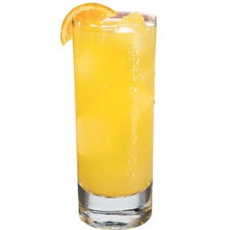
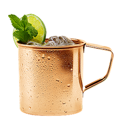
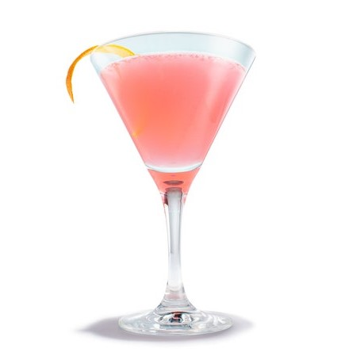
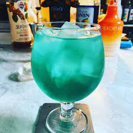
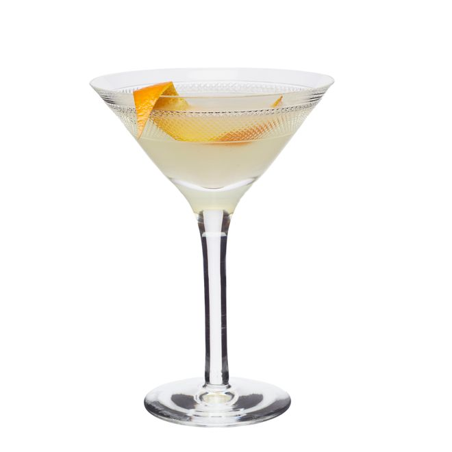

무색, 무미, 무향을 특징으로 하는 대표적인 증류주
- Screwdriver - Base 1~1.5oz Orange Juice fill-up

- Moscow Mule - Base 1.5oz Lime 0.5oz Ginger Ale fill-up

- Cosmopolitan(20) - Base 1oz Triple Sec 0.5oz Lime 0.5oz Cranberry 0.5oz

- Sea Breeze - Base 40ml Cranberry 4oz Grapefruit 1oz

- Sex on the Beach - Base 1oz Peachtree 0.5oz Orange 2oz Cranberry 2oz

- Aquamarine - Base 1oz Peachtree 20ml Blue Curacao 5ml Apple 4oz

- Blue Lagoon - Base 40ml Blue Curacao 0.5oz Lemon 0.5oz

- Balalaika(20) - Base 1oz Lemon 1oz Triple Sec 1oz

- Blue Sky(shooter) - Base 10ml Blue Curacao 10ml Peachtree 10ml milk